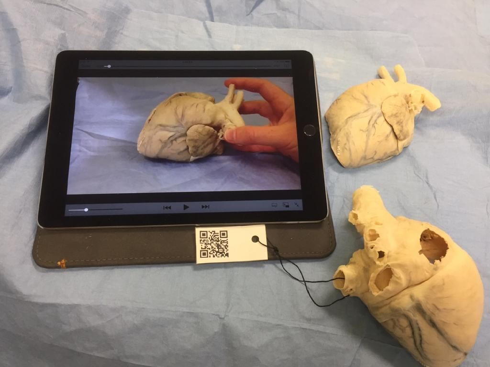

7.8 Compreendendo os fundamentos das mídias educacionais



Tenho consciência de que este capítulo pode parecer um pouco abstrato e teórico, mas em qualquer área temática é importante compreender as bases que sustentam a prática. Isto aplica-se com ainda maior força à compreensão das mídias e da tecnologia na educação, dado que se trata de um domínio muito dinâmico que muda constantemente. O que parecem ser os principais desenvolvimentos de mídias este ano serão provavelmente eclipsados por novos desenvolvimentos tecnológicos no próximo ano. Perante este mar de mudanças constantes, torna-se necessário recorrer a alguns conceitos ou princípios orientadores que tendam a permanecer constantes, independentemente das alterações que venham a ocorrer ao longo dos anos.
Assim, em síntese, apresentam-se os principais pontos que tenho vindo a salientar ao longo deste capítulo:
Pontos-chave
- As tecnologias são meras ferramentas que podem ser utilizadas de diversas formas. O que mais importa é a forma como são aplicadas. A mesma tecnologia pode ser aplicada de maneiras distintas, inclusive e sobretudo na educação. Assim, ao julgar o valor de uma tecnologia, necessitamos de analisar mais detalhadamente as formas como está sendo ou poderia ser utilizada. Em suma, isto significa focar mais nas mídias — que representam a utilização mais holística das tecnologias — do que nas ferramentas ou tecnologias individuais em si, reconhecendo contudo que a tecnologia constitui um componente essencial de quase todas as mídias.
- Ao focar nas mídias em vez de nas tecnologias, podemos incluir o ensino presencial como uma mídia, permitindo efetuar comparações com mídias baseadas na tecnologia ao longo de várias dimensões ou características.
- Reconhecendo que na educação as mídias são habitualmente utilizadas em combinação, os seis blocos de construção essenciais das mídias são:
- o ensino presencial;
- o texto;
- os recursos gráficos (estáticos);
- o áudio (incluindo a fala);
- o vídeo;
- a computação (incluindo animações, simulações e realidade virtual).
- As mídias diferem em termos dos seus formatos, sistemas de símbolos e valores culturais. Estas características únicas são cada vez mais designadas como affordances (possibilidades pedagógicas) da mídia ou da tecnologia. Assim, diferentes mídias podem ser utilizadas para ajudar os aprendizes a estudar de formas distintas e a alcançar resultados diversos, personalizando também mais a aprendizagem.
- Existem muitas dimensões ao longo das quais algumas tecnologias se assemelham e outras se diferenciam. Ao focar nestas dimensões, dispomos de uma base para analisar novas mídias e tecnologias, para ver onde se "encaixam" no panorama existente e para avaliar os seus potenciais benefícios ou limitações para o ensino e a aprendizagem.
- Existem provavelmente outras características ou dimensões das mídias educacionais que poderiam também ser identificadas, mas considero que estas três características ou dimensões principais são as mais importantes:
- transmissão (broadcast) vs. comunicativa;
- síncrona (ao vivo) vs. assíncrona (gravada);
- mídias únicas vs. mídias ricas.
- Contudo, a identificação do local onde uma determinada mídia se enquadra em relação a qualquer característica ou dimensão específica dependerá, na maior parte dos casos, da forma como essa mídia é planejada. Ao mesmo tempo, existe normalmente um limite para o grau de adaptação forçada de uma tecnologia ao longo destas dimensões; existirá provavelmente uma posição única e "natural" em cada dimensão, sujeita a um bom design, em termos de exploração das affordances educacionais da mídia.
- Estas características ou dimensões das mídias precisam de ser avaliadas face aos objetivos e resultados de aprendizagem pretendidos, reconhecendo que uma nova mídia ou aplicação educacional poderá permitir alcançar objetivos que não tinham sido anteriormente considerados possíveis.
- Ao longo do tempo, as mídias tenderam a tornar-se mais comunicativas, assíncronas e "ricas", oferecendo assim a professores e aprendizes ferramentas mais poderosas para o ensino e a aprendizagem.
- A internet constitui uma mídia extremamente poderosa porque, através de uma combinação de ferramentas e recursos, consegue abranger todas as características e dimensões das mídias educacionais.
Atividade 7.8 Analisando a sua utilização atual da tecnologia
- Escolha uma das disciplinas que ministra atualmente. Como poderia tornar o seu ensino mais comunicativo, assíncrono e rico em mídias? Que mídias ou tecnologias o ajudariam a fazê-lo?
- Descreva o que consideraria como (a) as vantagens, (b) as desvantagens de alterar o seu ensino desta forma.
- Considera que a aplicação das três dimensões descritas no texto será útil no momento de decidir sobre a utilização ou não de uma nova tecnologia? Se não, por quê?
O capítulo seguinte fornecerá mais feedback sobre as suas respostas.